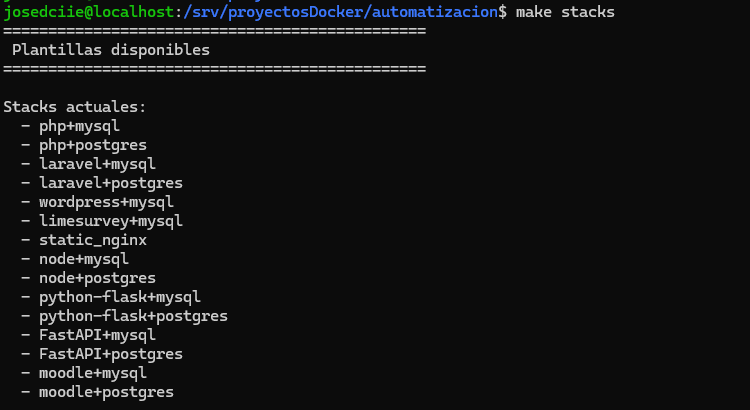
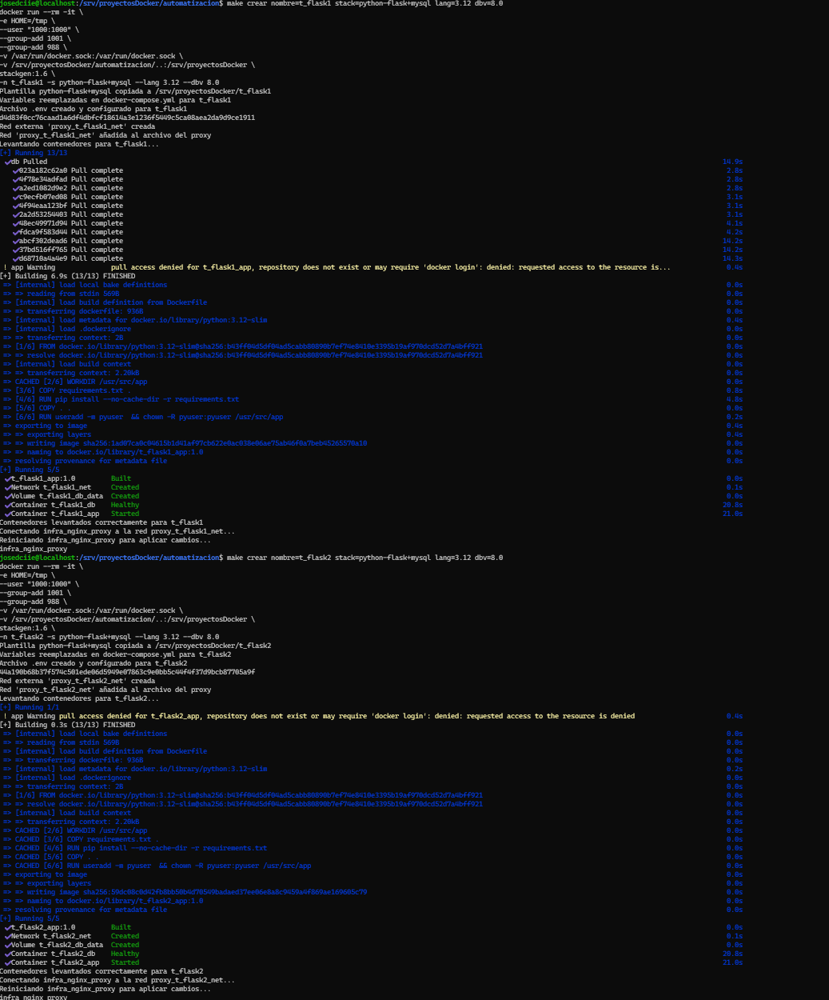
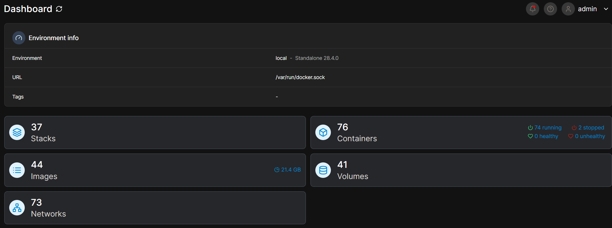
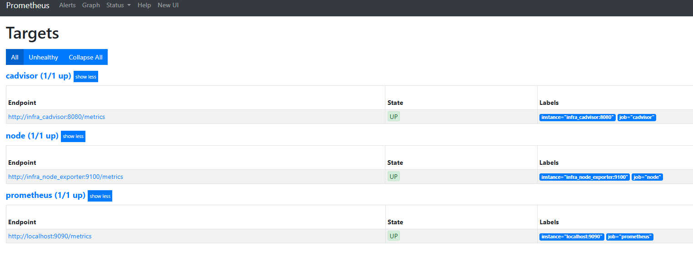
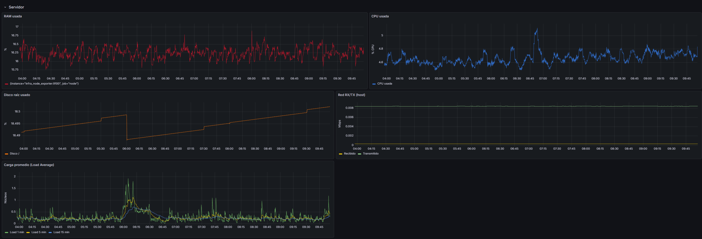
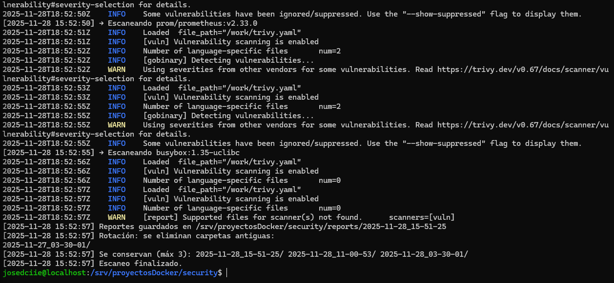

Situación
Problema
El Instituto gestionaba sus entornos de desarrollo de forma descentralizada, combinando configuraciones manuales en VPS y paneles WHM/cPanel, lo que generaba tiempos de despliegue elevados y falta de estandarización.
Trabajo de título · Ingeniería Civil Telemática, UFRO
Prototipo de plataforma centralizada con Docker para el Instituto de Informática Educativa (IIE) de la UFRO, evaluado como trabajo de título con pruebas controladas de eficiencia, carga y consolidación de servicios.
Situación
El Instituto gestionaba sus entornos de desarrollo de forma descentralizada, combinando configuraciones manuales en VPS y paneles WHM/cPanel, lo que generaba tiempos de despliegue elevados y falta de estandarización.
Propuesta
Una plataforma centralizada bajo el paradigma de Infraestructura como Código: proxy inverso, monitoreo con Prometheus y Grafana, y un módulo de automatización en Python para aprovisionar entornos estandarizados en un solo comando.
Alcance real
Trabajo de título aprobado por comisión examinadora en la Universidad de La Frontera (enero de 2026), con resultados medidos mediante pruebas controladas. No se presenta como servicio productivo expuesto a Internet.
Diseño del laboratorio
La preparación del entorno conduce a su operación, monitoreo y revisión técnica. Cada componente cumple una función dentro de esa secuencia.
Opciones de stack y versiones
Archivos, variables y red
Varios stacks levantados
Portainer y proxy
Prometheus y Grafana
Trivy para imágenes
Tecnologías aplicadas
Recorrido de la práctica
El caso se lee como una secuencia: primero se generan stacks desde plantillas, luego se prueban varias combinaciones, después se revisa la operación visualmente y finalmente se valida monitoreo y análisis de imágenes.
Crear el entorno
Primero se consulta la combinación requerida. Luego ejecuté make crear con nombre, stack y versiones: el generador copia la plantilla, crea el .env, reemplaza variables, crea una red externa, registra esa red en el proxy y levanta los contenedores con Docker Compose.


Probar varias plantillas
La validación no se quedó en una plantilla aislada. Durante la práctica se generaron distintos stacks para comprobar que el flujo funcionara con varias combinaciones de aplicación, base de datos y servicios auxiliares. Esa batería de pruebas explica por qué, más adelante, Portainer muestra varios stacks y decenas de contenedores: son entornos levantados para revisar comportamiento, redes, volúmenes y estado de los servicios.
Comprobar el despliegue
Después de levantar los entornos, Portainer se usó como una consola visual para inspeccionar lo que ya estaba corriendo: stacks, contenedores, imágenes, volúmenes y redes. No es el mecanismo que crea el laboratorio, sino una ayuda para revisar rápidamente estado, distribución y recursos cuando hay varias pruebas activas.

Monitorear el sistema
Con los entornos ya desplegados, configuré Prometheus para comprobar que los componentes de monitoreo estuvieran en estado UP. Con esa base, Grafana permitió revisar RAM, CPU, disco, red y carga del host durante las pruebas, en vez de mostrar solo un dashboard suelto sin contexto.


Revisar antes de reutilizar
Agregué un módulo con Trivy para revisar vulnerabilidades y conservar reportes locales rotados. Así, el laboratorio no termina al levantar un contenedor: deja una señal técnica para evaluar si una imagen conviene reutilizarse en futuras pruebas.

Medir el impacto real
El objetivo formal del trabajo de título exigía una reducción mínima del 25% en los tiempos de despliegue frente a los métodos manuales del Instituto (VPS configurado a mano y paneles WHM/cPanel). Medí el ciclo completo de aprovisionamiento —descarga, construcción y puesta en marcha del proxy— sobre las 15 plantillas del catálogo, en frío y con caché de imágenes.
Encontrar el límite real
Con la plataforma en régimen, sometí un servicio representativo a pruebas de carga escalonadas con k6 y reactivé simultáneamente los 37 entornos de prueba generados durante la validación. El sistema se mantuvo estable y sin errores hasta 1.000 usuarios virtuales concurrentes; a 2.000 mostró degradación leve (1,38% de errores) y a 4.000 alcanzó el punto de saturación, identificando al proxy inverso —no a las aplicaciones ni a las bases de datos— como el principal cuello de botella.
Aprendizajes